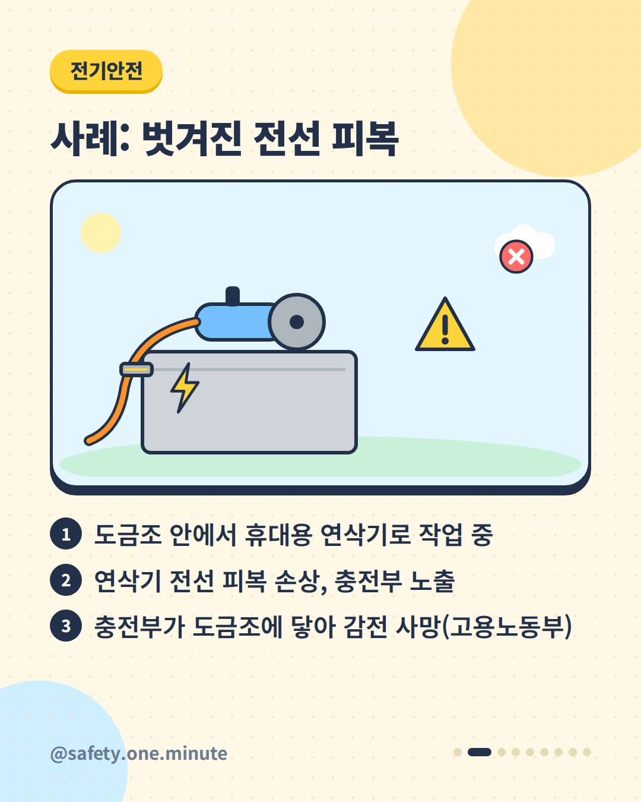

전선, 바닥에 둬도 될까? — 9장 (4:5)

캡션
현장에서 쓰는 이동전선, 통로 바닥에 그냥 깔아 둬도 될까요? 고용노동부가 공개한 재해사례입니다. 도금조 안에서 휴대용 연삭기로 작업하던 중, 연삭기 전선의 절연피복이 손상돼 드러난 충전부가 도금조에 닿으면서 작업자가 감전으로 숨졌습니다. 산업안전보건기준에 관한 규칙은 배선·이동전선에 대해 이렇게 정하고 있습니다. ① 작업·통행 중 닿을 수 있는 배선·이동전선은 피복 손상·노화로 인한 감전을 막는 조치(제313조) ② 전선을 이을 땐 절연성능 이상으로 충분히 피복하거나 적합한 접속기구 사용(제313조) ③ 통로바닥에 전선 설치 금지 — 피복 손상 우려가 없거나 손상되지 않도록 적절히 조치한 경우는 예외(제315조) ④ 물기 있는 곳은 절연효과가 충분한 이동전선, 방수형 등 알맞은 꽂음접속기, 젖은 손 취급 금지(제314·316·317조) ⑤ 차단기가 자동으로 떨어졌다면 회로·기기가 안전하다는 것이 증명되기 전까지 다시 올리지 않기(제317조) ※ 세부 요건은 법령 원문(2025.9.1. 시행본 기준)을 확인하세요. 출처: - 고용노동부 – 휴대용 연삭기 감전 재해사례(2007 게시) - 국가법령정보센터(법제처) – 산업안전보건기준에 관한 규칙 제313조~제317조 개인이 운영하는 안전정보 공유 계정이며 소속 기관의 공식 입장과 무관합니다. 법령 해석의 최종 근거는 국가법령정보센터 원문입니다. #감전예방 #이동전선 #전기안전 #가설전선 #현장안전 #안전보건규칙